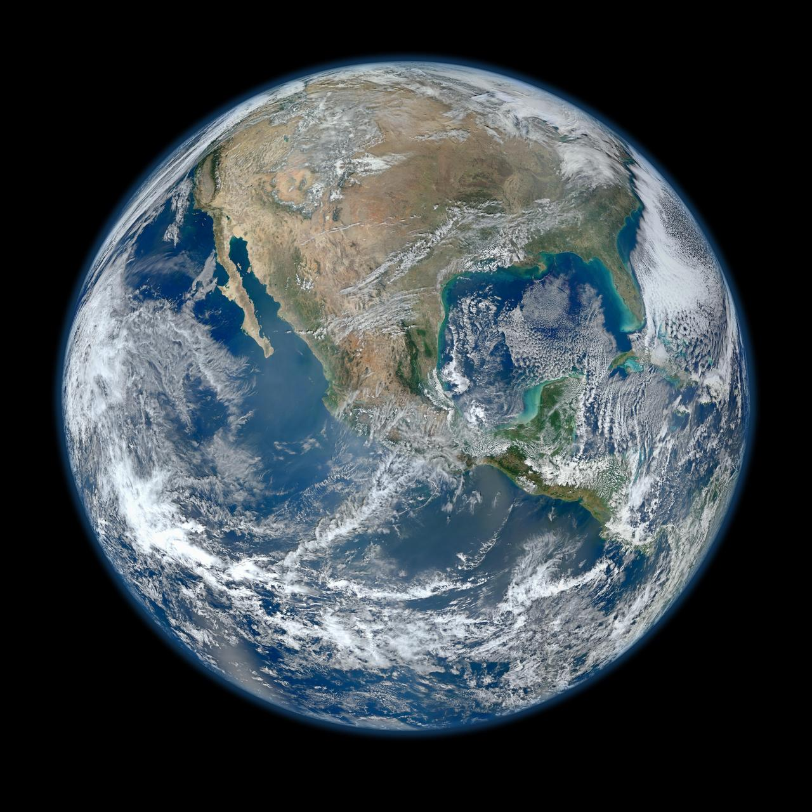
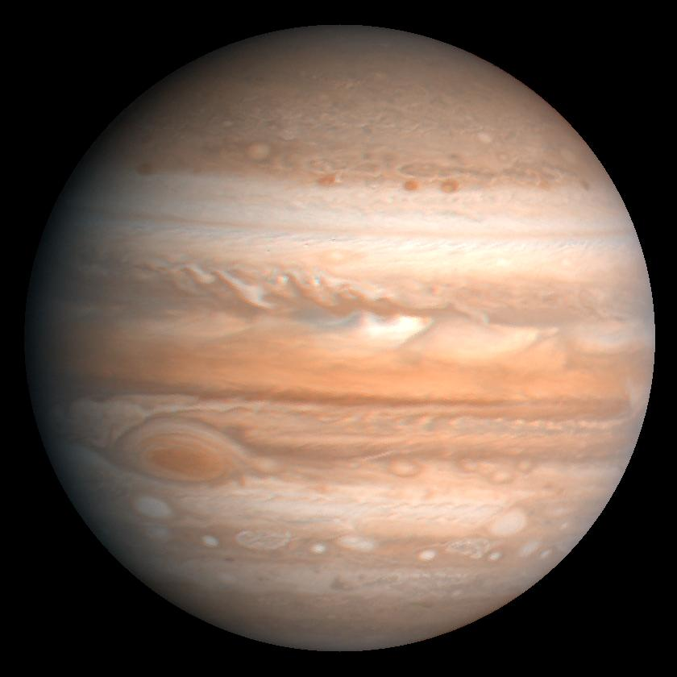

Земля
Наш дім у космосі.
NASA · PIA18033
Місяць
Природний супутник Землі.
NASA/JPL/USGS · PIA00405
Юпітер
Газовий гігант Сонячної системи.
NASA/JPL/USGS · PIA00343Лабораторна робота 3 · Робота з Git
Фотоальбом Ярослава Мороченця. Земля, Місяць і Юпітер на знімках NASA.

Наш дім у космосі.
NASA · PIA18033
Природний супутник Землі.
NASA/JPL/USGS · PIA00405
Газовий гігант Сонячної системи.
NASA/JPL/USGS · PIA00343